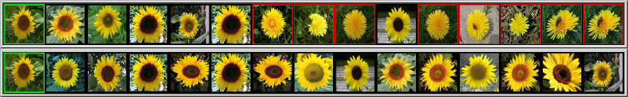
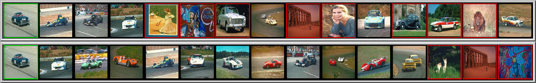

Seleção de implementações públicas das publicações.
SIBGRAPI 2026
Recuperação de imagens de granularidade fina com tokens de registro do DINOv2 e regiões de interesse locais.
Pattern Recognition Letters 2026 · SIBGRAPI 2025
Grafos de correlação de rankings para classificação semissupervisionada de imagens, com ponderação por vizinhança mútua no DGCG+.
SIBGRAPI 2026
Classificação de imagens com GNNs que combinam grafos de correlação de rankings e normalização gaussiana do grau.
SIBGRAPI 2026
Construção de grafos para GCNs que combina similaridade e diversidade de vizinhança para reduzir conexões redundantes.
WTAG / SBBD 2026
Seleção de coresets e combinação de classificadores para classificação de imagens com conjuntos de treinamento reduzidos.
IJCNN 2025 · IJIM Data Insights 2022 · VISAPP 2020
Pacote Python para aprender representações contextuais interpretáveis a partir de rankings, para recuperação, agrupamento e classificação.
ISVC 2024
Implementação em PyTorch de uma função de perda contrastiva baseada na similaridade contextual de vizinhanças para classificação de imagens.
ACM MM 2023 · ICMR 2017
Framework de aprendizado não supervisionado para reordenação e fusão de rankings, com interface Python via pyUDLF.


ICPR 2020 / 2021
Classificação fracamente supervisionada com expansão do conjunto de treinamento por medidas contextuais baseadas em rankings.
Neurocomputing 2020
Seleção e combinação não supervisionadas de listas ranqueadas para recuperação de imagens.